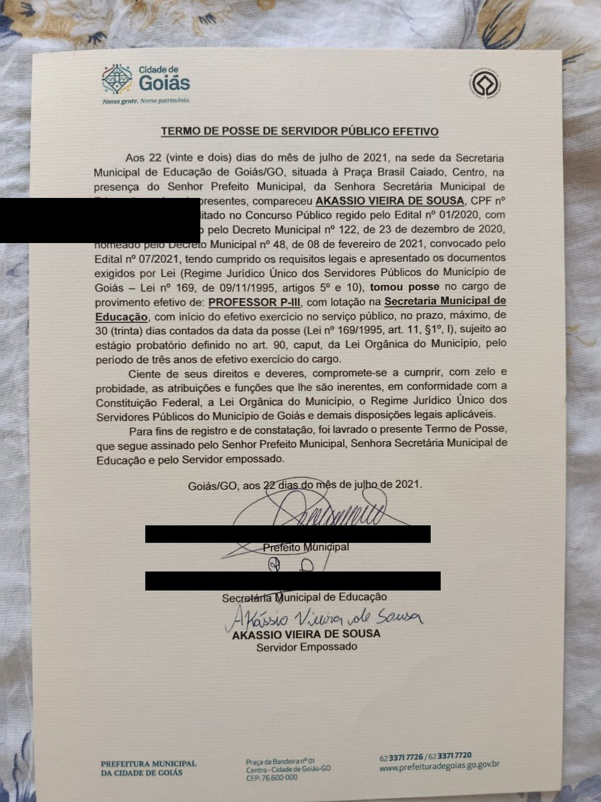
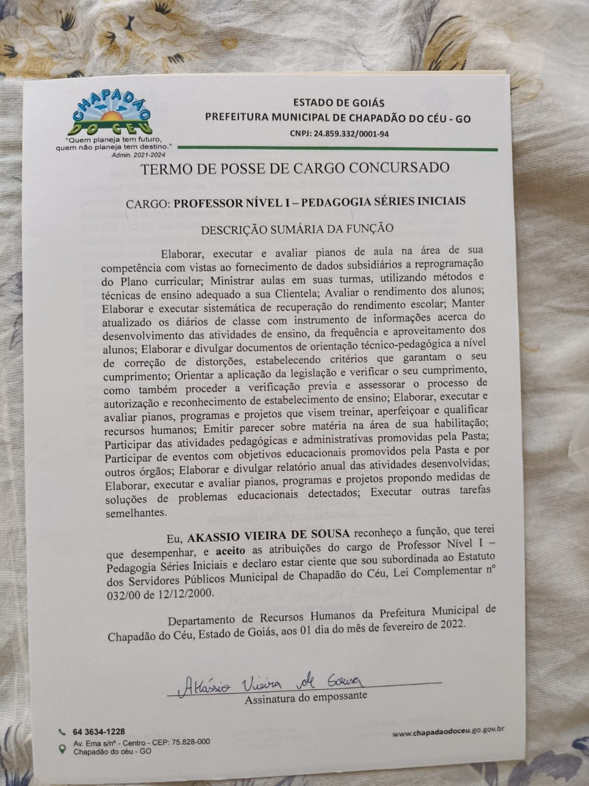
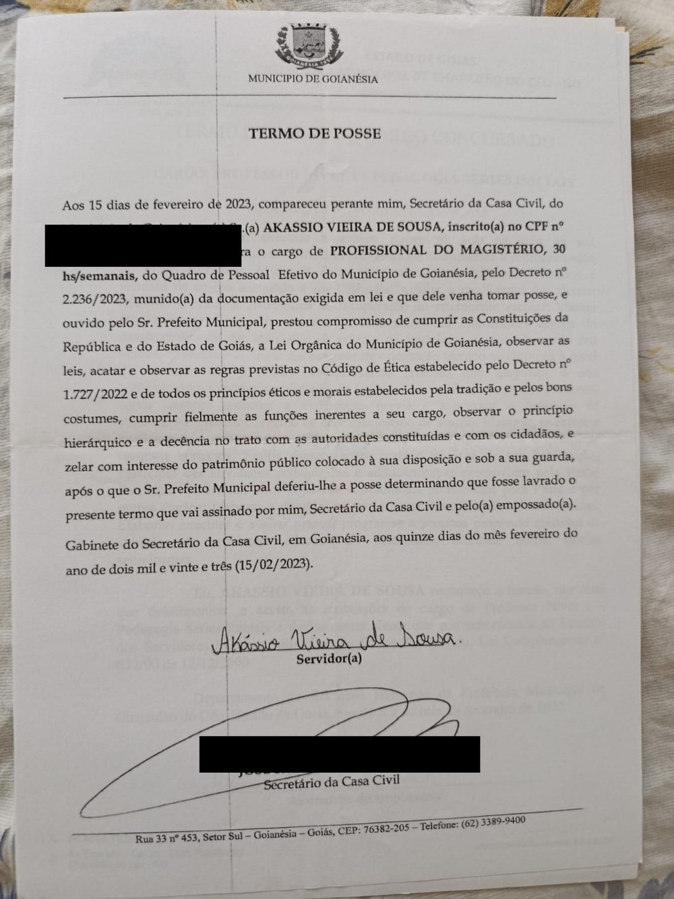

Quem já estudou para concurso da área da educação conhece o problema: dezenas de editais parecidos, uma pilha de PDFs genéricos e nenhuma ferramenta que realmente mostre se o estudo está funcionando.
O Método A.P.R.O.V.A. nasceu para resolver isso com um sistema — não mais um resumo solto. Reunimos método de estudo baseado em evidência (recuperação ativa, repetição espaçada, prática de questões) com planilhas que fazem o trabalho pesado de organização por você.
Nosso compromisso é simples: focar 100% nos cargos da área da educação — Professor, Coordenador Pedagógico, Gestor Escolar, Secretário Escolar, Técnico Administrativo, Analista Educacional, Pedagogo e Orientador Educacional — e manter o material sempre atualizado com as mudanças de legislação e BNCC.
Estude com direção. Passe com método.
Especialista em Gestão do Trabalho Educacional e Pedagógico, professor concursado e aprovado em 5 concursos públicos da área da educação. O Método A.P.R.O.V.A. é a sistematização de tudo que funcionou na prática — do primeiro edital lido até a última posse.
Aprovações:
Termos de posse originais — dados pessoais de terceiros e CPF foram ocultados por privacidade.


